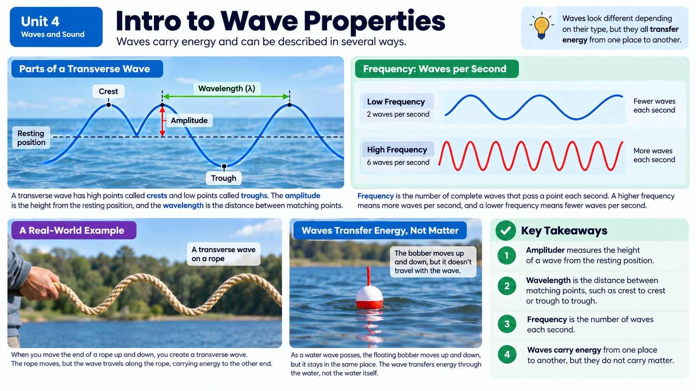
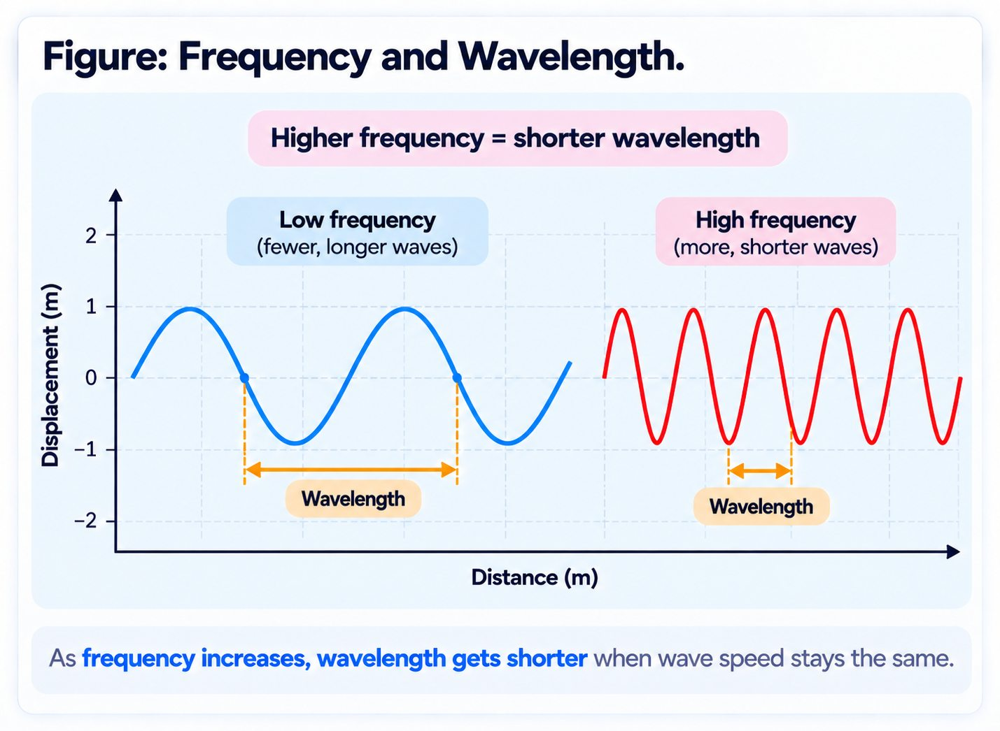

When a drummer sends a message pounding across a valley, or a friend's voice reaches your ears across a room, what is actually traveling through the air, and how can a wave carry a message at all?

The Anatomy of a Wave
Picture tossing a pebble into a calm pond. Ripples spread outward in perfect circles, one after another, without the water itself traveling across the pond; only the disturbance moves. That's the secret of every wave: it's energy on the move, not matter on the move. A duck floating on the water bobs up and down as the ripple passes, but it doesn't get carried to shore.
Every wave has the same basic parts, whether it's a ripple in a pond, a wiggle in a spring, or a sound wave in the air. The amplitude is the height of the wave from its resting position to its peak: think of it as how big or strong the wave is. The wavelength is the distance between one peak and the next. And the frequency is how many waves pass by in one second, measured in hertz (Hz). A high frequency means the waves are packed close together and arrive rapidly; a low frequency means they're spread out and arrive slowly.
These three properties aren't just abstract measurements: they tell you almost everything about a wave's behavior. A bigger amplitude means the wave is carrying more energy. That's why a huge ocean wave can knock you off your feet while a gentle ripple barely rocks a toy boat. Scientists and engineers use graphs of amplitude, wavelength, and frequency to predict exactly how a wave will behave before it even happens.
Waves on the Move: Springs, Ropes, and Ripple Tanks
You can watch these ideas come to life with something as simple as a spring toy or a rope. Shake one end of a rope up and down, and you create a transverse wave: the rope moves up and down while the wave itself travels sideways down its length. Push and pull a spring toy instead, bunching coils together and stretching them apart, and you get a compressional (longitudinal) wave, where the medium squeezes and stretches in the same direction the wave travels. Sound waves move through air exactly like that spring, as a chain of squeezed and stretched air molecules.
Ripple tanks, which are shallow trays of water used in science labs, let you see waves interact in real time. When a wave hits the edge of the tank, it reflects, bouncing back like a ball off a wall. When it passes from deep water into shallow water, it refracts, bending and changing speed. And when two waves cross paths, they pass right through each other, briefly combining their energy before continuing on unchanged, a behavior called transmission. These same three behaviors, reflection, refraction, and transmission, happen to every kind of wave, including the light and sound waves you experience every single day.
The medium a wave travels through changes its speed too. Sound zips through solids faster than through air because the tightly packed molecules in a solid pass the vibration along more quickly. That's why you can hear a train coming by pressing your ear to the track before you can hear it through the air.
Pitch, Loudness, and the Sound of Music
Sound waves are mechanical waves, meaning they need a medium, like air, water, or a solid, to travel through, unlike light. Two properties of a sound wave decide what it sounds like to your ears. Frequency determines pitch: a high-frequency wave sounds like a squeaky, high note, while a low-frequency wave sounds like a deep rumble. Amplitude determines loudness: a bigger amplitude means a louder sound because it's carrying more energy into your eardrum.
A guitar string plucked gently versus plucked hard produces the same pitch (same frequency) but very different volumes (different amplitudes), because how hard you pluck changes the amplitude, not the frequency. Meanwhile, a thick bass string vibrates at a lower frequency than a thin treble string, giving instruments their whole range of notes.
There's also a difference in how sound gets created and stored. An analog sound, like the actual vibration of a guitar string or a singer's vocal cords, is a smooth, continuous wave. A synthesizer or digital recording, on the other hand, builds sound out of tiny numerical snapshots, sampling the wave thousands of times per second and reconstructing it electronically. Both can sound incredible, but they capture sound in fundamentally different ways. That's an idea you'll dig into much more in a later topic.
Waves That Carry Messages
Long before phones existed, people already knew that waves could carry more than just energy: they could carry information. West African drummers used talking drums to send complex messages across villages, encoding words in patterns of high and low drumbeats that traveled for miles through the air. Indigenous nations across North America and cultures throughout Asia used smoke signals, puffs of smoke released in specific patterns, to send warnings or messages across valleys and plains, using light waves reflecting off smoke to carry a coded message.
In both cases, someone had to agree in advance on a code: a certain drum rhythm meant "danger," a certain smoke pattern meant "gather here." The wave itself was just the messenger; the pattern in the wave was the actual message. That's a huge idea that connects ancient communication to modern technology: from drumbeats to wifi signals, every method of sending information relies on encoding a pattern into a wave and having someone on the other end who knows how to decode it.
When Waves Meet: Interference
What happens when two waves cross paths at the exact same moment, in the exact same place? You already know they pass through each other unharmed, but for that brief instant while they overlap, something interesting happens called interference. If the peak of one wave lines up with the peak of another, their amplitudes add together, creating a wave that's momentarily bigger than either one alone. That's constructive interference. But if the peak of one wave lines up with the trough, or low point, of another, they cancel each other out, at least partially. That's destructive interference.
You can see constructive interference at a pool party, when ripples from two people jumping in at the same time overlap and briefly create a much bigger splash pattern right in the middle. Destructive interference is exactly how noise-canceling headphones work: a tiny microphone detects the sound waves of outside noise, and the headphones generate a second sound wave that's the exact opposite shape, peak lined up with trough, so the two waves cancel each other out before the noise ever reaches your ear. It feels like magic, but it's just careful wave math happening thousands of times a second.
Musicians and acoustical engineers even use interference on purpose to shape sound in concert halls, lining up reflected sound waves so they reinforce each other out in the audience instead of muddying the music. Understanding interference means understanding that waves aren't just individual events: when more than one wave shares the same space, their effects combine, for better or worse, and that combining is happening around you far more often than you'd think.
Two Ways a Wave Can Wiggle
Before going further it is worth being clear about what a wave actually is, because the definition is stricter than most people expect. A wave is a rhythmic disturbance that carries energy without carrying matter. Throw a ball to a friend and both energy and matter travel across the room. Send a wave down a rope and only the energy makes the trip; every bit of the rope ends up right where it started.
You can watch this on a pool. When someone cannonballs off the diving board, your air mattress starts bobbing even though nobody touched it. The water did not flow from the diving board to you. Each patch of water simply moved up and down as the disturbance passed through, handing the energy along to the next patch. Waves that need a substance to travel through are called mechanical waves, and the substance itself is the medium.
Mechanical waves come in two flavors, and the difference is simply which way the medium jiggles compared with the direction the wave travels. In a transverse wave, the matter moves at right angles to the wave's path. Stretch a rope across the floor and shake one end side to side: the wave races away from your hand while the rope itself only whips sideways. The high points are crests and the low points are troughs.
In a compressional wave, the matter moves forward and backward along the same line the wave travels. Squeeze a handful of coils on a spring toy and let go, and you can watch a bunched-up region travel down its length while each coil just shifts and springs back. Sound works this way. Hum with your fingers on your throat and you feel your vocal cords vibrating; each push forward crowds the air molecules into a compression that travels outward to your listener's ear. Every wave, of either kind, starts with something vibrating.
Calculating How Fast a Wave Travels
Watch a thunderstorm from a few kilometers away and you see the lightning well before you hear the thunder, sometimes by many seconds. Both signals leave the same place at the same instant, so the gap tells you something real: light rips through air at about 300 million meters per second, while sound crawls along at roughly 340 meters per second. Light is almost a million times faster.
The speed of any wave ties together the two measurements from the start of this chapter through one tidy equation: wave speed = frequency × wavelength. Frequency is measured in hertz, wavelength in meters, and the answer comes out in meters per second. If a wave has a frequency of 20 Hz and a wavelength of 3 m, its speed is 20 × 3 = 60 m/s.
That equation carries a consequence students often miss. For waves traveling at a fixed speed through the same material, frequency and wavelength are locked in a trade: raise one and the other has to fall, because their product cannot change. Short wavelengths always mean high frequencies, and long wavelengths always mean low ones. Notice too that a wave's speed depends on what it is traveling through, and the two kinds behave oppositely. Mechanical waves like sound move fastest through solids and slowest through gases, while electromagnetic waves like light do the reverse, moving fastest through a gas or a vacuum. Light travels about 30 percent faster in air than in water, which is exactly the fact behind the refraction you read about earlier.

Real-World Connections
Concert Hall Acoustics
The curved walls and textured panels in a concert hall are carefully designed to reflect and absorb sound waves so music sounds rich and clear in every seat, instead of echoing or getting muffled.
Guitar Strings
A thicker or looser guitar string vibrates at a lower frequency, producing a lower-pitched note, while a thinner or tighter string vibrates faster for a higher pitch: frequency you can literally hear.
Meet the Scientist
Acoustical Engineers
Acoustical engineers design the shape and materials of spaces like concert halls, recording studios, and even classrooms so sound waves behave the way people want. They use their knowledge of wave reflection and absorption to prevent echoes, reduce unwanted noise, and make sure a voice reaches the back row clearly.
Key Vocabulary
Bold, underlined words in the reading above are clickable too: tap one to see its definition pop out. Or click or tap a card below to reveal the definition.
Explore More
Chapter Review
1. When you toss a pebble into a pond, what actually travels outward in the ripples?
2. A guitarist plucks the same string harder than before, but the note stays the same pitch. What wave property changed?
3. Why can you hear an approaching train through the metal rail before you hear it through the air?
4. A wave crosses a ripple tank and passes right through a second wave without either one being destroyed. This behavior is called:
5. How did talking drums and smoke signals manage to send actual messages, not just noise or light?
Design the Experiment
California Science Test (CAST) Practice
A recording engineer measures the sound waves produced by four different guitar notes on a digital tuner. The frequency and amplitude of each wave are shown in the table below.
| Wave | Frequency (Hz) | Amplitude (cm) |
|---|---|---|
| A | 220 | 2 |
| B | 220 | 6 |
| C | 330 | 2 |
| D | 440 | 6 |
Based on the data in the table, which two waves would sound like the exact same pitch but at different volumes?